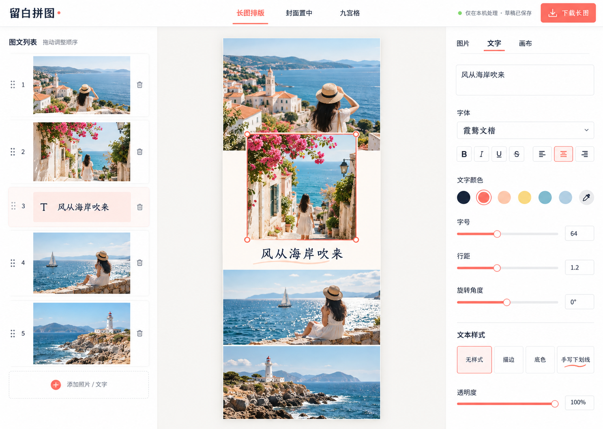
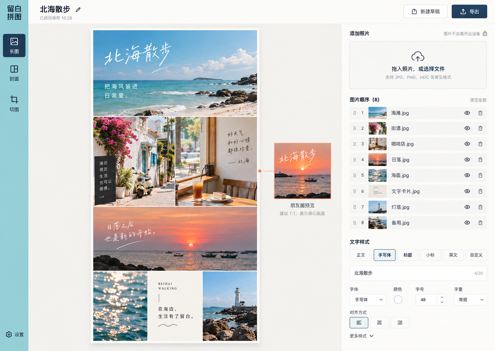
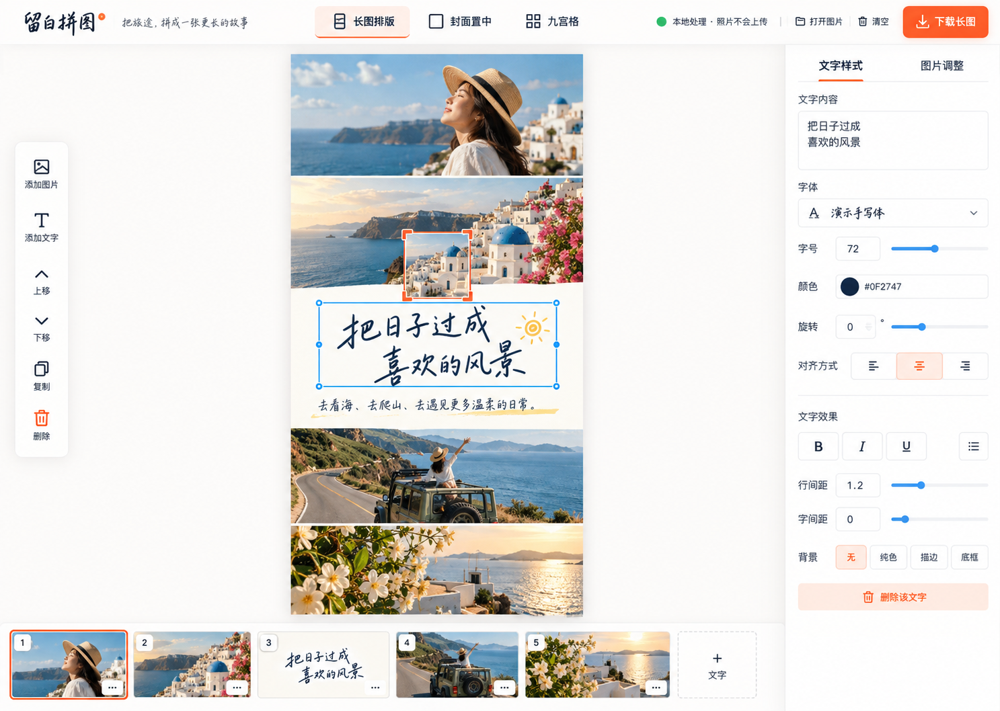

本地即隐私
图片只在浏览器内处理；保存状态与错误文案都要让用户看懂这一点。
一个纯浏览器的旅行图片工作台：排长图、控制朋友圈中部方形缩略图，并把一张照片切成 4 / 6 / 9 张发布序列。
图片只在浏览器内处理；保存状态与错误文案都要让用户看懂这一点。
画布与朋友圈预览是主角，参数只在选中对象时出现。
手机端不是桌面缩小版；工具切换、上传、排序与导出保持拇指可达。
非目标：云端账户、多人协作、AI 修图、社交平台直发与专业图层系统。
| ID | 需求与验收 | 状态 |
|---|---|---|
| REQ-001 | 手机与电脑上传本地图片、刷新后恢复草稿、下载结果；不上传服务器。 | accepted |
| REQ-002 | 长图工具可排序照片，在任意位置插入文字，并调整颜色、字体、字号、对齐与旋转。 | accepted |
| REQ-003 | 封面工具指导裁出正方形，并将其插入长图中部，同时显示中心方形缩略图预览。 | accepted |
| REQ-004 | 切图工具可把一张图裁成 2×2、3×2 或 3×3，并按发布顺序下载 4 / 6 / 9 张。 | accepted |
| REQ-005 | 明亮、简洁、影像优先，参考 Instagram 的克制与清晰，同时保留自己的编辑器气质。 | accepted |
| REQ-006 | 桌面长图编辑器的顺序、画布和属性三栏必须拥有独立滚动边界，不能带动整页或彼此联动。 | accepted |
| REQ-007 | 左栏“添加照片 / 文字卡片”固定在顶部，仅图文顺序列表进入滚动容器。 | accepted |
| REQ-008 | 图片文字使用当前窗口内的专用弹窗编辑器，文本框可在图片内自由拖动与精细定位，不受上中下三档限制。 | accepted |
| REQ-009 | 界面支持简中、繁中与英语；文案集中管理，便于直接调整内容。 | accepted |
以下均为 concept，不是实现截图。三者共享“阳光摄影工作室”语言：暖白、深海军蓝、杏珊瑚、泳池蓝与浅柠檬；标准 Web 控件；中央方形取景框作为唯一签名动作。

用户已确认。照片顺序、结果画布和编辑参数同时可见；桌面效率高，手机端折叠为画布优先的纵向工作流。

旅行影像存在感最强，朋友圈预览独立清晰；风险是上传、排序和文字面板集中在右侧，操作密度偏高。

排序操作直观、专业编辑感强；风险是水平时间线在手机端需要另一套编排。
| ID | 建议 | 理由 | 状态 |
|---|---|---|---|
| DEC-001 | 采用方向 1，并将三栏在窄屏重排为：画布 → 当前对象工具 → 顺序抽屉。 | 在桌面效率与手机可达之间最平衡。 | accepted |
| DEC-002 | 使用 IndexedDB 保存图片 Blob 与草稿结构。 | 比 localStorage 更适合大图；无需服务器。 | accepted |
| DEC-003 | 以 Canvas 2D 生成预览和下载结果，导出前显示尺寸与内存风险。 | 浏览器兼容性广，足以覆盖三种工具。 | accepted |
| 映射 | 实现 | 证据 | 剩余工作 |
|---|---|---|---|
| REQ-001 / DEC-002 | verified | 浏览器上传、刷新恢复 2 个内容块；IndexedDB 草稿代码已检查 | 无 |
| REQ-002 / REQ-008 / DEC-003 | verified | 浏览器实测图片文字弹窗、自由坐标、方向键微调、文本框宽度和长图预览；生产构建通过 | 无 |
| REQ-003 | verified | 浏览器实测方形裁切、长图中部插入与合成预览 | 无 |
| REQ-004 | verified | 4 / 6 / 9 几何单测；浏览器确认 4 图为 2×2 预览和下载顺序 | 浏览器首次批量下载时可能要求授权 |
| REQ-005 / DEC-001 | verified | 桌面三栏与 390px 手机宽度浏览器检查；无横向溢出 | 无 |
| REQ-006 | verified | 1280×720 浏览器测得三栏固定为 652px 高；中栏和右栏分别产生独立 scrollHeight，页面本身不滚动 | 无 |
| REQ-007 | verified | 添加工具位于左栏固定区；`.sequence-scroll` 独占剩余高度并配置垂直滚动 | 无 |
| REQ-009 | verified | 三份强类型语言文件覆盖工具、弹窗、状态、无障碍文案、页面元数据和下载文件名；语言本地持久化；12 项测试和生产构建通过 | 真实设备最终内容验收 |
2026-10-08 — 接入简中、繁中与英语三语界面；文案集中到强类型语言文件；语言选择写入本地存储并同步页面语言和元数据；新增国际化单测，12 项测试与生产构建通过。
2026-10-07 — 三栏改为独立滚动；左栏添加工具置顶、顺序列表单独滚动；图片文字改为支持拖动、键盘微调和自由坐标的弹窗编辑器。桌面与 390px 手机端验证通过，9 项测试通过。
2026-10-05 — 完成长图、封面与切图工具；修正 4 图为 2×2 排列；7 项单元测试和生产构建通过；完成桌面与手机浏览器检查。
2026-10-05 — 用户确认方向 1 与先视觉稿后编码；视觉基准已锁定并进入实现。
2026-10-05 — 记录产品边界、技术栈与三个视觉基准；Impeccable 引擎下载被网络阻止，采用已安装技能正文的降级流程。